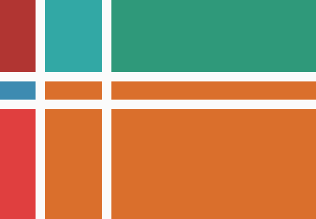

CSS layouts  Grid Flexboks Det finnes flere forskjellige CSS layouts, men det er bare to som er gjeldende den dag i dag. Det som brukes i dag er grid og flexbox. Disse ble spesifikt laget for å erstatte float funksjonen. Float er ikke helt et layout, men mer en funksjon som kunne bli «hacket» til å lage et komplisert layout. Det er et dårlig valg til å basere et layout på, siden det er buggy og begrenset. Grid er et system som bruker kolonner og rader til å plassere elementer innenfor disse. Det er det aller nyeste, og tar over Flexbox (som brukes mest i dag) og Float (som er på vei ut). Det er derfor ikke støttet på alle steder ennå, men det er forventet at skal endres på. Flexbox fungerer slik at det har en container som inneholder items. Containeren kan legges ut horisontalt eller vertikalt. Child elementer av containeren kan da «flexe» sine størrelser, for å fylle ubrukt område, eller krympe for å ikke overlappe. Ved å da nøste flere containere i forskjellige retninger, kan du oppnå komplekse layouts.